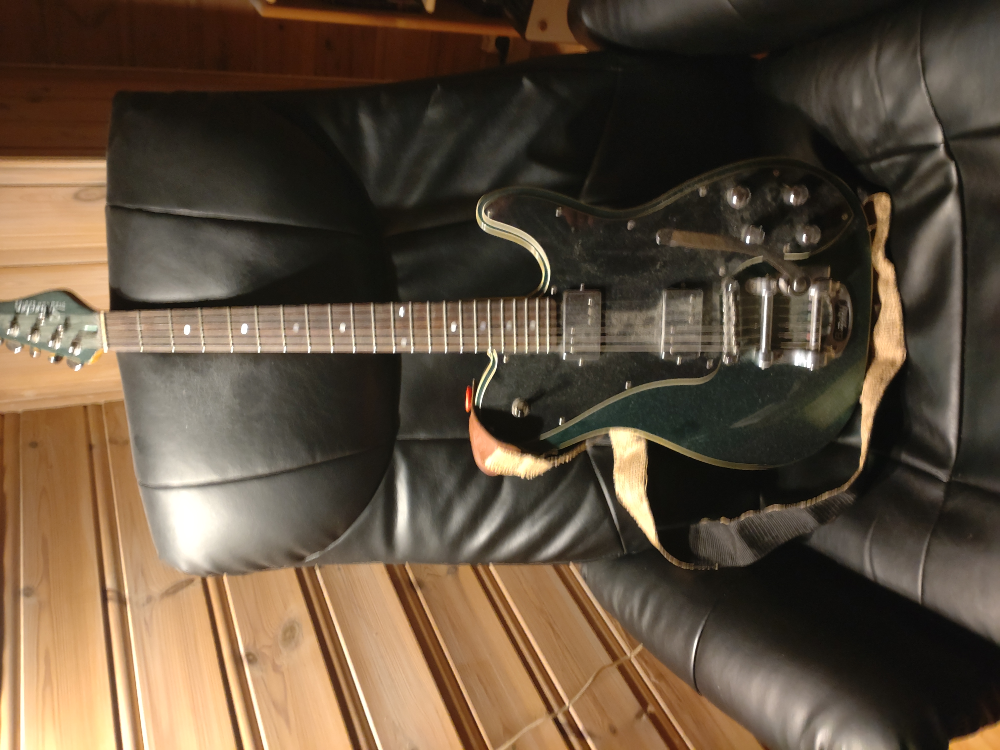
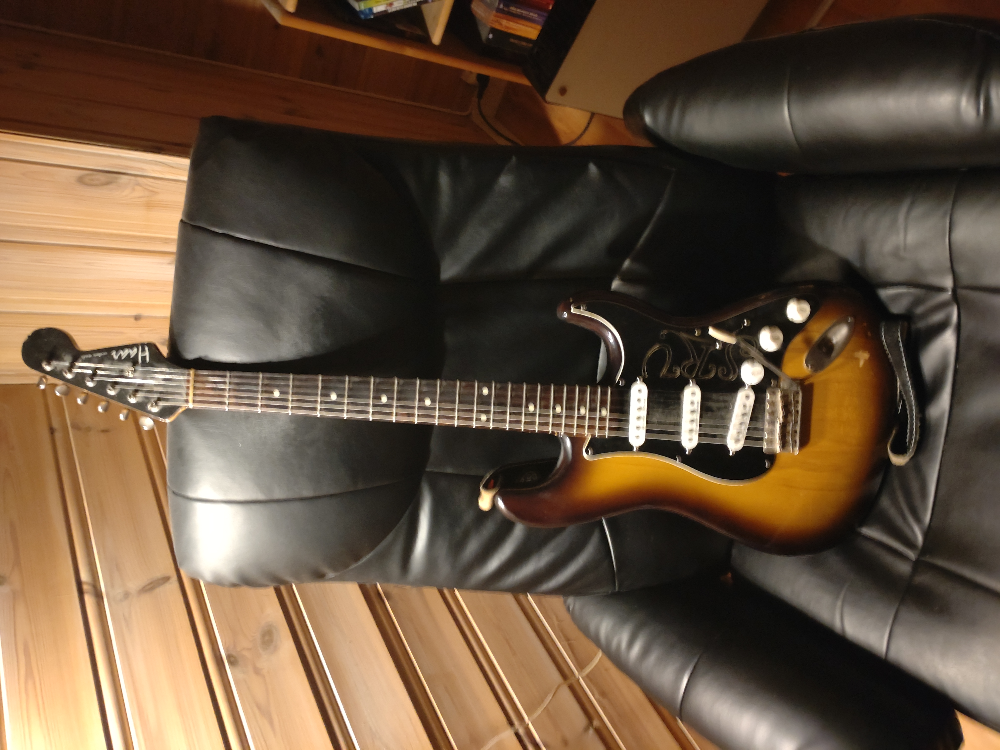
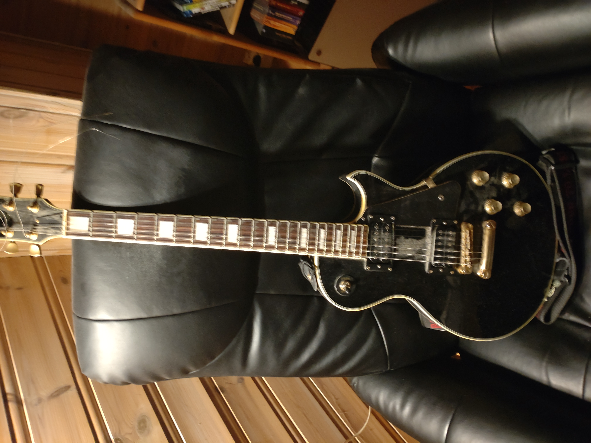
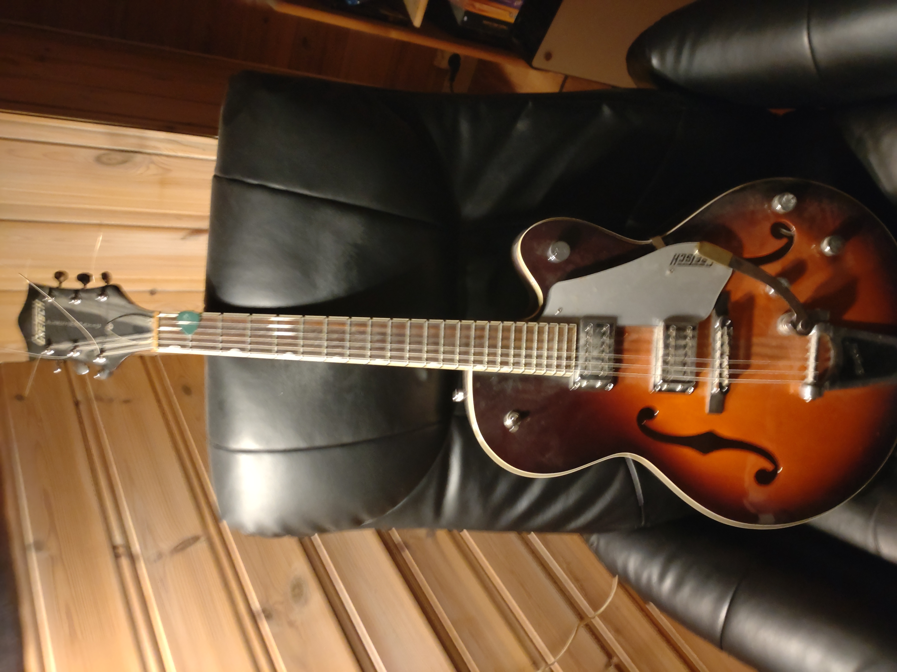
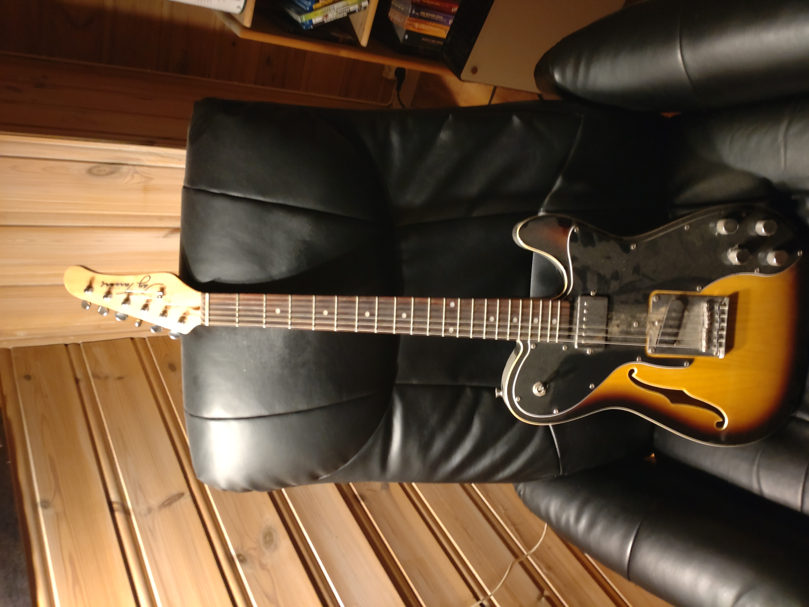

Bilder og beskrivelser av brukte gitarer jeg selger. Kontakt:
kimdino at x eller x91
Alle gitarene er satt opp for .011 strenger
Merk: jeg sender ikke pr post!
----------------------------------------------

Schecter Fastback PT m/Bigsby
4000,-
Solidbody gitar fra retroserien til Schecter. To "Diamond Rock"
humbuckere med individuell splitt til singlecoils i tonepottene (push/pull), slik at man får flere lyder. Veldig behagelig å spille på.
Inkluderer gitarkasse, straplocks fra Grolsch og reim.
----------------------------------------------

Haar Trad-S ("Harrycaster")
8000,-
Fra en bygger i Nederland, med senere modifikasjoner. Honeyburst, med plekterbrett fra en SRV-strat. Mikkene er tre Seymour Duncan "Custom Staggered" single coils, med bryter på volumpotten (push/pull) som velger inn stolmikken uansett posisjon på femveisvelgeren. Halsen er av en tjukkere type, som gjør den litt tung å spille på, men til gjengjeld får lyden mer sustain og mykere resonans, og treverket som er brukt er angivelig brasiliansk (jeg kjøpte den brukt fra en gitarmekker i Trondheim, legendariske Geir Falck). Inkluderer kasse, reim og straplocks.
----------------------------------------------

Jack & Danny Deluxe LP
1000,-
Kinesisk solidbody. Humbuckerne er Seymour Duncan '59, som gir ren og fin lyd med mye og bred diskant, og en morsom blues-mellomtone i halsposisjon. God å spille på og fin lyd, men truss rod'en sitter fast og halsen er litt for stram, slik at de første båndene på den høye e-strengen er litt daue. Inkluderer gitarbag og reim.
----------------------------------------------

Gretsch Electromatic
4000,-
Halvakustisk (Hollowbody) fra "billigkroken" til legendariske Gretsch. Fin å spille på, lyden har mye mellomtone og en del bass, avmålt diskant, "twang"-aktig lyd. Egner seg best til jazz. Inkluderer bag.
----------------------------------------------

Jay Turser tele-lignende semiakustisk (flattop, thinline)
500,-
Aner ikke hvor den kommer fra, muligens Kina. Lyden er fin, noe mer mellomtone og snert enn en solidbody, men den er ikke særlig god å spille på: den holder ikke på stemminga, intonasjonen er dårlig og vanskelig å fikse, den er vond å stemme. Mye av dette kan kanskje fikses av en proff. Uten tilbehør.
----------------------------------------------

Boss ME70, Multieffektpedal, gitarkabel og strømadapter
1000,-
Har preamp med eq, fire effektmoduler, en expressionpedal (volum, wah-wah, whammy etc.), og en minnebank. Samt mer jeg ikke har utforsket.
Kan kobles til forsterker eller headset (jack). Har også line-in og noen andre mystiske greier.
----------------------------------------------
Jeg har også to gitarer til som selges, men jeg har ikke bilder (ennå). En Fender Telecaster '72, med to Fender "Wide range" humbuckere, til 3000,- kr, og en Epiphone "Hound dog" dobro (akustisk), til 2000,-.